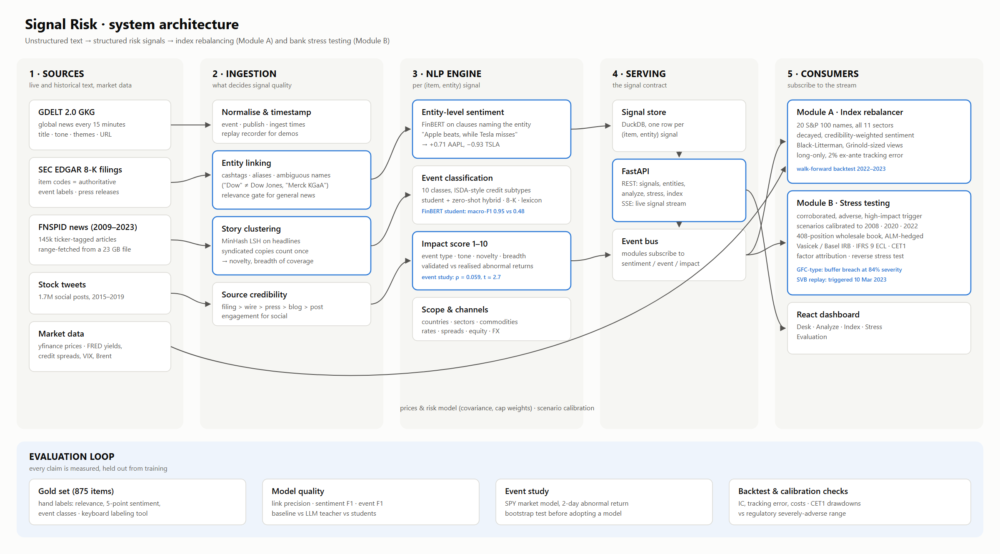
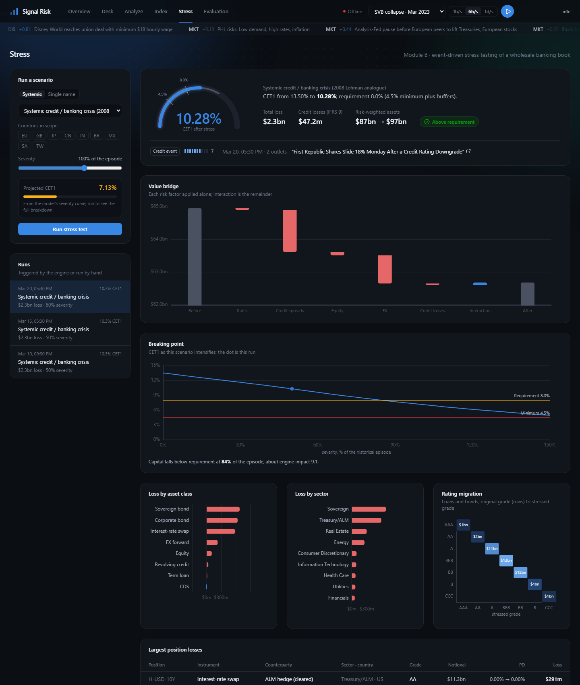

From unstructured news, filings and posts to structured risk signals, and from those signals to an index that rebalances on sentiment and a bank that stress-tests itself when the world changes.
A sanctions headline, a downgrade, a bank run: risk teams read them hours or days before the information reaches structured feeds and the next scheduled stress test.
The hard part is not running a sentiment model. It is knowing which company a sentence is about, counting a syndicated story once, telling chatter from events, and proving that an "impact" score means something in market terms.

Cashtags, aliases and guarded ambiguous names: "Dow" is not Dow Jones, "Merck KGaA" is not Merck, an apple pie is not Apple. Clause targeting gives "Apple beats, while Tesla misses" +0.71 and −0.93.
MinHash clustering counts syndicated copies once and turns breadth of coverage and novelty into features; a relevance gate keeps general news honest.
FinBERT fine-tuned on 12.8k finance tweets: macro-F1 0.95 vs 0.48 for zero-shot on held-out data. Hybrid keeps zero-shot for classes without data; a Groq-hosted LLM teacher fills them.
GDELT's 15-minute GKG files (the search API throttles), SEC 8-K item codes as free event labels, 145k FNSPID articles range-fetched from a 23 GB file (6% downloaded).
Sentiment views sized by Grinold's rule (α = IC × σ × score) inside Black-Litterman, Ledoit-Wolf risk, long-only, 2% ex-ante TE, no-trade band.
Vasicek conditional PDs, IFRS 9 stage 2 lifetime ECL, Basel IRB RWA, revolver drawdowns, ALM-hedged rate book, factor attribution and reverse stress testing.
Python · PyTorch (CUDA, laptop RTX 3050) · Hugging Face Transformers · DuckDB · FastAPI + server-sent events · React · ECharts · 65 automated tests

For a bank's risk team: a corroborated adverse event becomes a scenario calibrated to history, scaled by its severity and targeted at the countries it names, and lands as CET1 headroom, the exposures driving the loss and the severity at which buffers break. Stress testing stops being a quarterly ritual.
For a portfolio manager: sentiment enters as a sized, confidence-weighted view under a hard risk budget, so a burst of credible news tilts the index and a single viral post does not.
For model risk: every number has a test behind it, and the system says when it is not good enough.
Code, data sources and setup: public GitHub repository (README) · demo video linked there